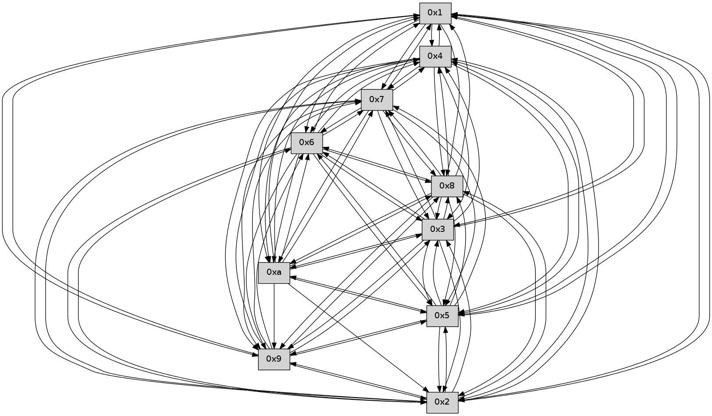

>> << IDX [start] -100 -25 -5 +0 +5 +25 +100 [410.256603956]
 Previous packets
----------------------------------------------------------------------
405.527815 beacon01(faad) #0 coord=01,02,03,04,05,06,07,0a,09,08 cycle=688.0ms assoc
-- color-indic=0 64 fe 0f
405.537797 beacon02(faad) #0 coord=01,02,03,04,05,06,07,0a,09,08 cycle=688.0ms assoc 64 6d 3e
405.547797 beacon03(faad) #0 coord=01,02,03,04,05,06,07,0a,09,08 cycle=688.0ms assoc 64 17 73
405.557800 beacon04(faad) #0 coord=01,02,03,04,05,06,07,0a,09,08 cycle=688.0ms assoc 64 60 99
405.567799 beacon05(faad) #0 coord=01,02,03,04,05,06,07,0a,09,08 cycle=688.0ms assoc 64 1a d4
405.577797 beacon06(faad) #0 coord=01,02,03,04,05,06,07,0a,09,08 cycle=688.0ms assoc 64 94 03
405.587799 beacon07(faad) #0 coord=01,02,03,04,05,06,07,0a,09,08 cycle=688.0ms assoc 64 ee 4e
405.597804 beacon0a(faad) #0 coord=01,02,03,04,05,06,07,0a,09,08 cycle=688.0ms assoc 64 9f 45
405.607804 beacon09(faad) #0 coord=01,02,03,04,05,06,07,0a,09,08 cycle=688.0ms assoc 64 11 92
405.617804 beacon08(faad) #0 coord=01,02,03,04,05,06,07,0a,09,08 cycle=688.0ms assoc 64 6b df
405.629907 [Hello(7): seq=262 sym=2,3,5,6,4,8,9,10,1 sysInfo= stat=2:1,0,0,0/3:14,0,0,0/5:5,0,0,0/6:12,0,0,0/4:13,0,0,0/8:8,0,0,0/9:10,0,0,0/10:11,0,0,0/1:1,0,0,0]
405.633236 [Hello(6): seq=262 sym=2,3,5,4,7,9,8,10,1 sysInfo= stat=2:2,0,0,0/3:3,0,0,0/5:0,0,0,0/4:5,0,0,0/7:2,0,0,0/9:14,0,0,0/8:1,0,0,0/10:11,0,0,0/1:3,0,0,0]
405.643667 [Hello(1): seq=171 sym=4,2,9,5,10,3,8,6,7 sysInfo= stat=4:4,0,0,0/2:9,0,0,0/9:15,0,0,0/5:10,0,0,0/10:6,0,0,0/3:12,0,0,0/8:11,0,0,0/6:12,0,0,0/7:0,0,0,0]
----------------------------------------------------------------------
406.315948 beacon01(faad) #0 coord=01,02,03,04,05,06,07,0a,09,08 cycle=688.0ms assoc
-- color-indic=0 64 42 0a
406.325932 beacon02(faad) #0 coord=01,02,03,04,05,06,07,0a,09,08 cycle=688.0ms assoc 64 d1 3b
406.335930 beacon03(faad) #0 coord=01,02,03,04,05,06,07,0a,09,08 cycle=688.0ms assoc 64 ab 76
406.345930 beacon04(faad) #0 coord=01,02,03,04,05,06,07,0a,09,08 cycle=688.0ms assoc 64 dc 9c
406.355934 beacon05(faad) #0 coord=01,02,03,04,05,06,07,0a,09,08 cycle=688.0ms assoc 64 a6 d1
406.365931 beacon06(faad) #0 coord=01,02,03,04,05,06,07,0a,09,08 cycle=688.0ms assoc 64 28 06
406.375932 beacon07(faad) #0 coord=01,02,03,04,05,06,07,0a,09,08 cycle=688.0ms assoc 64 52 4b
406.385935 beacon0a(faad) #0 coord=01,02,03,04,05,06,07,0a,09,08 cycle=688.0ms assoc 64 23 40
406.395937 beacon09(faad) #0 coord=01,02,03,04,05,06,07,0a,09,08 cycle=688.0ms assoc 64 ad 97
406.405937 beacon08(faad) #0 coord=01,02,03,04,05,06,07,0a,09,08 cycle=688.0ms assoc 64 d7 da
406.417724 [Hello(5): seq=263 sym=7,6,4,3,1,9,8,10,2 sysInfo= stat=7:0,0,0,0/6:3,0,0,0/4:10,0,0,0/3:2,0,0,0/1:0,0,0,0/9:3,0,0,0/8:3,0,0,0/10:4,0,0,0/2:14,0,0,0]
406.420415 [Hello(10): seq=195 sym=6,3,2,5,9,8,7,4,1 sysInfo= stat=6:9,0,0,0/3:11,0,0,0/2:5,0,0,0/5:14,0,0,0/9:12,0,0,0/8:15,0,0,0/7:13,0,0,0/4:10,0,0,0/1:2,0,0,0]
406.425049 [Hello(3): seq=263 sym=1,7,6,2,4,8,9,10,5 sysInfo= stat=1:3,0,0,0/7:11,0,0,0/6:6,0,0,0/2:15,0,0,0/4:0,0,0,0/8:14,0,0,0/9:8,0,0,0/10:2,0,0,0/5:14,0,0,0]
406.428237 [Hello(2): seq=260 sym=4,5,7,6,3,9,10,1 sysInfo= stat=4:2,0,0,0/5:7,0,0,0/7:12,0,0,0/6:3,0,0,0/3:1,0,0,0/9:11,0,0,0/10:15,0,0,0/1:13,0,0,0]
406.430941 [Hello(8): seq=206 sym=5,2,3,4,7,6,9,10,1 sysInfo= stat=5:3,0,0,0/2:9,0,0,0/3:5,0,0,0/4:7,0,0,0/7:7,0,0,0/6:11,0,0,0/9:15,0,0,0/10:8,0,0,0/1:8,0,0,0]
406.436842 [Hello(4): seq=263 sym=5,7,6,2,3,9,8,10,1 sysInfo= stat=5:10,0,0,0/7:2,0,0,0/6:5,0,0,0/2:10,0,0,0/3:6,0,0,0/9:0,0,0,0/8:4,0,0,0/10:7,0,0,0/1:0,0,0,0]
406.447204 [Hello(9): seq=206 sym=5,2,3,4,7,6,8,10,1 sysInfo= stat=5:12,0,0,0/2:10,0,0,0/3:9,0,0,0/4:3,0,0,0/7:8,0,0,0/6:15,0,0,0/8:6,0,0,0/10:12,0,0,0/1:6,0,0,0]
----------------------------------------------------------------------
407.104079 beacon01(faad) #0 coord=01,02,03,04,05,06,07,0a,09,08 cycle=688.0ms assoc
-- color-indic=0 64 86 04
407.114061 beacon02(faad) #0 coord=01,02,03,04,05,06,07,0a,09,08 cycle=688.0ms assoc 64 15 35
407.124061 beacon03(faad) #0 coord=01,02,03,04,05,06,07,0a,09,08 cycle=688.0ms assoc 64 6f 78
407.134061 beacon04(faad) #0 coord=01,02,03,04,05,06,07,0a,09,08 cycle=688.0ms assoc 64 18 92
407.144065 beacon05(faad) #0 coord=01,02,03,04,05,06,07,0a,09,08 cycle=688.0ms assoc 64 62 df
407.154062 beacon06(faad) #0 coord=01,02,03,04,05,06,07,0a,09,08 cycle=688.0ms assoc 64 ec 08
407.164063 beacon07(faad) #0 coord=01,02,03,04,05,06,07,0a,09,08 cycle=688.0ms assoc 64 96 45
407.174068 beacon0a(faad) #0 coord=01,02,03,04,05,06,07,0a,09,08 cycle=688.0ms assoc 64 e7 4e
407.184067 beacon09(faad) #0 coord=01,02,03,04,05,06,07,0a,09,08 cycle=688.0ms assoc 64 69 99
407.194067 beacon08(faad) #0 coord=01,02,03,04,05,06,07,0a,09,08 cycle=688.0ms assoc 64 13 d4
407.205245 [Hello(1): seq=172 sym=4,2,9,5,10,3,8,6,7 sysInfo= stat=4:5,0,0,0/2:10,0,0,0/9:0,0,0,0/5:11,0,0,0/10:7,0,0,0/3:13,0,0,0/8:12,0,0,0/6:12,0,0,0/7:0,0,0,0]
407.209824 [Hello(6): seq=263 sym=2,3,5,4,7,9,8,10,1 sysInfo= stat=2:3,0,0,0/3:4,0,0,0/5:1,0,0,0/4:6,0,0,0/7:2,0,0,0/9:15,0,0,0/8:2,0,0,0/10:12,0,0,0/1:4,0,0,0]
407.215089 [Hello(7): seq=263 sym=2,3,5,6,4,8,9,10,1 sysInfo= stat=2:2,0,0,0/3:15,0,0,0/5:6,0,0,0/6:13,0,0,0/4:14,0,0,0/8:9,0,0,0/9:11,0,0,0/10:12,0,0,0/1:2,0,0,0]
----------------------------------------------------------------------
407.892211 beacon01(faad) #0 coord=01,02,03,04,05,06,07,0a,09,08 cycle=688.0ms assoc
-- color-indic=0 64 3a 01
407.902194 beacon02(faad) #0 coord=01,02,03,04,05,06,07,0a,09,08 cycle=688.0ms assoc 64 a9 30
407.912193 beacon03(faad) #0 coord=01,02,03,04,05,06,07,0a,09,08 cycle=688.0ms assoc 64 d3 7d
407.922194 beacon04(faad) #0 coord=01,02,03,04,05,06,07,0a,09,08 cycle=688.0ms assoc 64 a4 97
407.932194 beacon05(faad) #0 coord=01,02,03,04,05,06,07,0a,09,08 cycle=688.0ms assoc 64 de da
407.942194 beacon06(faad) #0 coord=01,02,03,04,05,06,07,0a,09,08 cycle=688.0ms assoc 64 50 0d
407.952195 beacon07(faad) #0 coord=01,02,03,04,05,06,07,0a,09,08 cycle=688.0ms assoc 64 2a 40
407.962199 beacon0a(faad) #0 coord=01,02,03,04,05,06,07,0a,09,08 cycle=688.0ms assoc 64 5b 4b
407.972199 beacon09(faad) #0 coord=01,02,03,04,05,06,07,0a,09,08 cycle=688.0ms assoc 64 d5 9c
407.982199 beacon08(faad) #0 coord=01,02,03,04,05,06,07,0a,09,08 cycle=688.0ms assoc 64 af d1
407.993353 [Hello(10): seq=196 sym=6,3,2,5,9,8,7,4,1 sysInfo= stat=6:10,0,0,0/3:12,0,0,0/2:6,0,0,0/5:14,0,0,0/9:13,0,0,0/8:0,0,0,0/7:14,0,0,0/4:11,0,0,0/1:3,0,0,0]
407.998756 [Hello(3): seq=264 sym=1,7,6,2,4,8,9,10,5 sysInfo= stat=1:4,0,0,0/7:12,0,0,0/6:7,0,0,0/2:0,0,0,0/4:1,0,0,0/8:15,0,0,0/9:9,0,0,0/10:2,0,0,0/5:14,0,0,0]
408.003861 [Hello(4): seq=264 sym=5,7,6,2,3,9,8,10,1 sysInfo= stat=5:10,0,0,0/7:3,0,0,0/6:6,0,0,0/2:10,0,0,0/3:6,0,0,0/9:1,0,0,0/8:4,0,0,0/10:7,0,0,0/1:1,0,0,0]
408.007505 [Hello(8): seq=207 sym=5,2,3,4,7,6,9,10,1 sysInfo= stat=5:3,0,0,0/2:9,0,0,0/3:5,0,0,0/4:8,0,0,0/7:8,0,0,0/6:12,0,0,0/9:0,0,0,0/10:8,0,0,0/1:9,0,0,0]
----------------------------------------------------------------------
408.680342 beacon01(faad) #0 coord=01,02,03,04,05,06,07,0a,09,08 cycle=688.0ms assoc
-- color-indic=0 64 ee 34
408.690325 beacon02(faad) #0 coord=01,02,03,04,05,06,07,0a,09,08 cycle=688.0ms assoc 64 7d 05
408.700324 beacon03(faad) #0 coord=01,02,03,04,05,06,07,0a,09,08 cycle=688.0ms assoc 64 07 48
408.710325 beacon04(faad) #0 coord=01,02,03,04,05,06,07,0a,09,08 cycle=688.0ms assoc 64 70 a2
408.720326 beacon05(faad) #0 coord=01,02,03,04,05,06,07,0a,09,08 cycle=688.0ms assoc 64 0a ef
408.730325 beacon06(faad) #0 coord=01,02,03,04,05,06,07,0a,09,08 cycle=688.0ms assoc 64 84 38
408.740325 beacon07(faad) #0 coord=01,02,03,04,05,06,07,0a,09,08 cycle=688.0ms assoc 64 fe 75
408.750330 beacon0a(faad) #0 coord=01,02,03,04,05,06,07,0a,09,08 cycle=688.0ms assoc 64 8f 7e
408.760332 beacon09(faad) #0 coord=01,02,03,04,05,06,07,0a,09,08 cycle=688.0ms assoc 64 01 a9
408.770331 beacon08(faad) #0 coord=01,02,03,04,05,06,07,0a,09,08 cycle=688.0ms assoc 64 7b e4
408.781814 [Hello(6): seq=264 sym=2,3,5,4,7,9,8,10,1 sysInfo= stat=2:4,0,0,0/3:5,0,0,0/5:1,0,0,0/4:7,0,0,0/7:3,0,0,0/9:15,0,0,0/8:3,0,0,0/10:13,0,0,0/1:4,0,0,0]
408.788348 [Hello(7): seq=264 sym=2,3,5,6,4,8,9,10,1 sysInfo= stat=2:3,0,0,0/3:0,0,0,0/5:6,0,0,0/6:13,0,0,0/4:15,0,0,0/8:10,0,0,0/9:11,0,0,0/10:13,0,0,0/1:2,0,0,0]
----------------------------------------------------------------------
409.468473 beacon01(faad) #0 coord=01,02,03,04,05,06,07,0a,09,08 cycle=688.0ms assoc
-- color-indic=0 64 52 31
409.478456 beacon02(faad) #0 coord=01,02,03,04,05,06,07,0a,09,08 cycle=688.0ms assoc 64 c1 00
409.488456 beacon03(faad) #0 coord=01,02,03,04,05,06,07,0a,09,08 cycle=688.0ms assoc 64 bb 4d
409.498457 beacon04(faad) #0 coord=01,02,03,04,05,06,07,0a,09,08 cycle=688.0ms assoc 64 cc a7
409.508456 beacon05(faad) #0 coord=01,02,03,04,05,06,07,0a,09,08 cycle=688.0ms assoc 64 b6 ea
409.518457 beacon06(faad) #0 coord=01,02,03,04,05,06,07,0a,09,08 cycle=688.0ms assoc 64 38 3d
409.528457 beacon07(faad) #0 coord=01,02,03,04,05,06,07,0a,09,08 cycle=688.0ms assoc 64 42 70
409.538465 beacon0a(faad) #0 coord=01,02,03,04,05,06,07,0a,09,08 cycle=688.0ms assoc 64 33 7b
409.548463 beacon09(faad) #0 coord=01,02,03,04,05,06,07,0a,09,08 cycle=688.0ms assoc 64 bd ac
409.558463 beacon08(faad) #0 coord=01,02,03,04,05,06,07,0a,09,08 cycle=688.0ms assoc 64 c7 e1
409.569620 [Hello(5): seq=265 sym=7,6,4,3,1,9,8,10,2 sysInfo= stat=7:1,0,0,0/6:5,0,0,0/4:12,0,0,0/3:4,0,0,0/1:1,0,0,0/9:4,0,0,0/8:5,0,0,0/10:5,0,0,0/2:15,0,0,0]
409.573912 [Hello(3): seq=265 sym=1,7,6,2,4,8,9,10,5 sysInfo= stat=1:5,0,0,0/7:12,0,0,0/6:8,0,0,0/2:0,0,0,0/4:2,0,0,0/8:0,0,0,0/9:9,0,0,0/10:2,0,0,0/5:14,0,0,0]
409.576475 [Hello(2): seq=262 sym=4,5,7,6,3,9,8,1 sysInfo= stat=4:4,0,0,0/5:7,0,0,0/7:14,0,0,0/6:5,0,0,0/3:2,0,0,0/9:12,0,0,0/8:1,0,0,0/1:14,0,0,0]
409.581554 [Hello(10): seq=197 sym=6,3,2,5,9,8,7,4,1 sysInfo= stat=6:11,0,0,0/3:13,0,0,0/2:6,0,0,0/5:14,0,0,0/9:13,0,0,0/8:1,0,0,0/7:15,0,0,0/4:12,0,0,0/1:3,0,0,0]
409.584117 [Hello(9): seq=208 sym=5,2,3,4,7,6,8,1 sysInfo= stat=5:12,0,0,0/2:10,0,0,0/3:10,0,0,0/4:4,0,0,0/7:9,0,0,0/6:1,0,0,0/8:7,0,0,0/1:8,0,0,0]
409.587758 [Hello(8): seq=208 sym=5,2,3,4,7,6,9,10,1 sysInfo= stat=5:3,0,0,0/2:9,0,0,0/3:5,0,0,0/4:8,0,0,0/7:8,0,0,0/6:13,0,0,0/9:0,0,0,0/10:8,0,0,0/1:9,0,0,0]
409.590843 [Hello(4): seq=265 sym=5,7,6,2,3,9,8,10,1 sysInfo= stat=5:10,0,0,0/7:4,0,0,0/6:7,0,0,0/2:10,0,0,0/3:6,0,0,0/9:1,0,0,0/8:5,0,0,0/10:7,0,0,0/1:1,0,0,0]